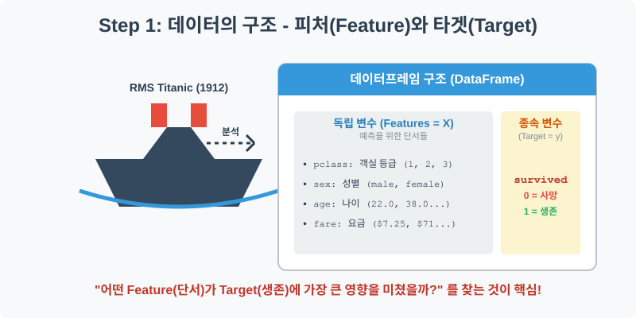
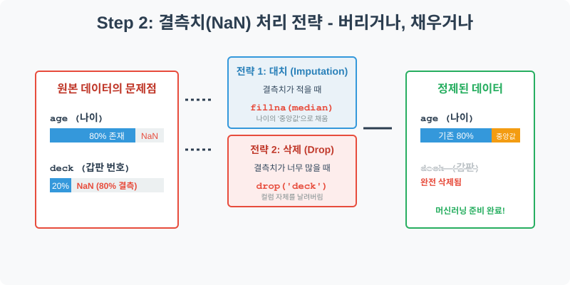
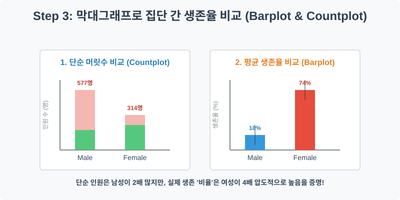
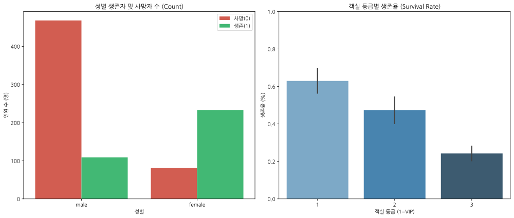
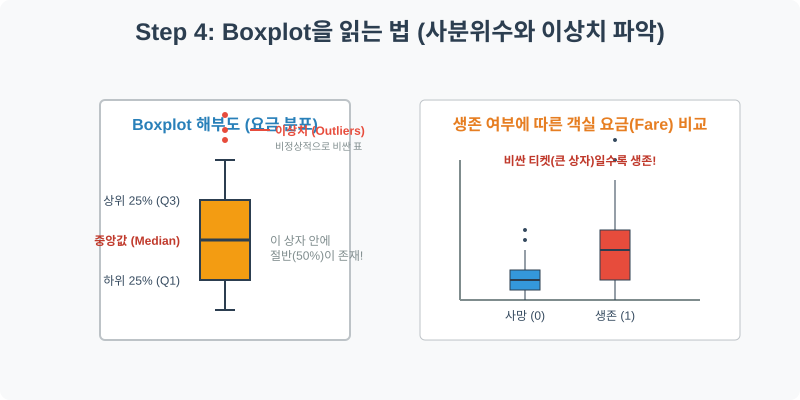
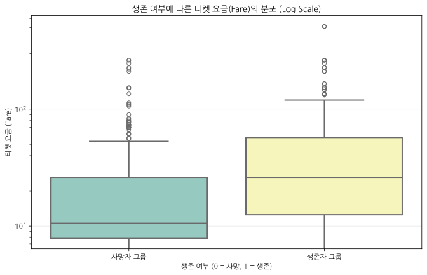

실전 데이터 분석 01: 타이타닉 생존자 예측 (Titanic)
📌 강의 개요 (30분 완성)
이 실습은 데이터 분석 및 머신러닝 분야에서 가장 유명한 “Hello World”와도 같은 타이타닉(Titanic) 데이터셋을 다룹니다. 1912년 발생한 타이타닉호 침몰 사고의 실제 승객 명부를 바탕으로, “어떤 특징(성별, 나이, 객실 등급 등)을 가진 승객이 더 많이 살아남았을까?”라는 질문에 대한 해답을 데이터를 통해 추적해 봅니다.
학습 목표:
- 데이터 구조의 이해: 독립 변수(Feature)와 종속 변수(Target)의 개념을 확립합니다.
- 결측치(Missing Values) 처리: 비어있는 데이터를 어떻게 다룰 것인지 논리적 근거를 바탕으로 결정합니다.
- 범주형 데이터 시각화:
countplot과barplot을 활용하여 집단 간의 ‘생존율’ 차이를 직관적으로 비교합니다. - 분포 및 이상치 분석:
boxplot을 통해 수치형 데이터(요금, 나이)의 통계적 분포를 해석하는 방법을 배웁니다.
Step 1: 데이터 살펴보기 (Overview)

가장 먼저 해야 할 일은 데이터를 파이썬 메모리로 불러와서 어떻게 생겼는지 확인하는 것입니다. 타이타닉 데이터는 승객의 다양한 정보(Feature)와 최종 생존 여부(Target)를 포함하고 있습니다.
import pandas as pd
import seaborn as sns
import matplotlib.pyplot as plt
# 그래프 설정 (한글 폰트 및 마이너스 기호 깨짐 방지)
plt.rcParams['font.family'] = 'AppleGothic'
plt.rcParams['axes.unicode_minus'] = False
sns.set_palette("Set2") # 부드러운 파스텔톤 팔레트 적용
# Seaborn에 내장된 타이타닉 데이터셋 불러오기
df = sns.load_dataset('titanic')
# 처음 5개 행(Row) 확인
display(df.head())
💻 [실행 결과]
survived pclass sex age ... deck embark_town alive alone 0 0 3 male 22.0 ... NaN Southampton no False 1 1 1 female 38.0 ... C Cherbourg yes False 2 1 3 female 26.0 ... NaN Southampton yes True 3 1 1 female 35.0 ... C Southampton yes False 4 0 3 male 35.0 ... NaN Southampton no True [5 rows x 15 columns]
💡 코드 딥다이브 (Code Deep Dive)
sns.load_dataset('titanic'): Seaborn 라이브러리는 교육용으로 미리 정제된 유명한 데이터셋들을 인터넷에서 바로 다운로드하여 Pandas DataFrame 형태로 반환해 주는 편리한 기능을 제공합니다.display(df.head()): 표 형태의 데이터를 시각적으로 깔끔하게 렌더링하여 첫 5줄을 보여줍니다.
주요 컬럼(Columns) 해석:
- Target (예측해야 할 정답):
survived: 생존 여부 (0 = 사망, 1 = 생존) - 우리가 최종적으로 분석하고자 하는 핵심 변수입니다.
- Features (예측의 단서가 되는 정보들):
pclass: 객실 등급 (1 = 1등석, 2 = 2등석, 3 = 3등석) - 당시의 부와 사회적 지위를 나타냅니다.sex: 성별 (male, female)age: 나이fare: 지불한 티켓 요금embark_town: 탑승한 항구 이름
Step 2: 전처리와 결측치 정제 (Preprocess)

현실의 데이터는 결코 완벽하지 않습니다. 정보를 입력하지 않았거나 유실되어 ‘비어있는 칸(NaN - Not a Number)’이 반드시 존재합니다. 이를 결측치(Missing Values)라고 부르며, 분석 전에 반드시 해결해야 합니다.
# 1. 컬럼별 결측치 개수 확인
print("--- 정제 전 결측치 확인 ---")
print(df.isnull().sum())
# 2. 'deck' 컬럼은 결측치가 너무 많아(약 77%) 정보로서의 가치가 없으므로 삭제(Drop)
df = df.drop('deck', axis=1)
# 3. 'age' 컬럼의 결측치는 전체 승객 나이의 중앙값(Median)으로 채움(Imputation)
median_age = df['age'].median()
df['age'] = df['age'].fillna(median_age)
print("\n--- 정제 후 결측치 확인 ---")
print(df.isnull().sum())
💻 [실행 결과]
--- 정제 전 결측치 확인 --- survived 0 pclass 0 sex 0 age 177 sibsp 0 parch 0 fare 0 embarked 2 class 0 who 0 adult_male 0 deck 688 embark_town 2 alive 0 alone 0 dtype: int64 --- 정제 후 결측치 확인 --- survived 0 pclass 0 sex 0 age 0 sibsp 0 parch 0 fare 0 embarked 2 class 0 who 0 adult_male 0 embark_town 2 alive 0 alone 0 dtype: int64
💡 분석가의 통찰 (Analyst’s Insight)
- 왜 ‘deck’은 지우고 ‘age’는 살렸을까요?
deck(갑판 번호) 컬럼은 891명의 승객 중 약 688명의 데이터가 비어 있습니다. 이를 임의의 값으로 채우면 오히려 데이터가 심각하게 왜곡되므로, 컬럼 전체를 삭제(drop)하는 것이 합리적입니다.- 반면,
age(나이)는 탑승객의 약 20%만 누락되었습니다. 나이는 생존을 결정하는 데 매우 중요한 변수이므로 삭제하기보다는 ‘대표값’으로 채워 넣는 대치(Imputation) 전략을 씁니다. 이때 극단적인 값(아주 늙거나 아주 어린 승객)의 영향을 덜 받는 중앙값(median())을 사용하는 것이 평균(mean())을 사용하는 것보다 통계적으로 안전합니다.
Step 3: 성별/객실 등급에 따른 생존율 분석 (Univariate EDA)

영화 ‘타이타닉’을 보면 “여성과 아이들 먼저!”라는 대사가 나옵니다. 과연 이 규칙은 실제 상황에서도 지켜졌을까요? 이를 막대그래프로 검증해 봅시다.
# 1행 2열의 그래프 공간 생성 (크기는 가로 14, 세로 6)
fig, axes = plt.subplots(1, 2, figsize=(14, 6))
# 첫 번째 그래프: 성별 단순 탑승/생존자 '수' 비교 (Countplot)
sns.countplot(data=df, x='sex', hue='survived', ax=axes[0], palette=['#e74c3c', '#2ecc71'])
axes[0].set_title('성별 생존자 및 사망자 수 (Count)')
axes[0].set_xlabel('성별')
axes[0].set_ylabel('인원 수 (명)')
# 범례 이름 변경
axes[0].legend(['사망(0)', '생존(1)'])
# 두 번째 그래프: 객실 등급별 '평균 생존율' 비교 (Barplot)
sns.barplot(data=df, x='pclass', y='survived', ax=axes[1], palette='Blues_d')
axes[1].set_title('객실 등급별 생존율 (Survival Rate)')
axes[1].set_xlabel('객실 등급 (1=VIP)')
axes[1].set_ylabel('생존율 (%)')
# Y축을 0~1 (0%~100%) 로 고정하여 직관성 확보
axes[1].set_ylim(0, 1)
plt.tight_layout()
plt.show()
💻 [실행 결과]

💡 코드 딥다이브 & 인사이트
countplot은 절대적인 인원 수를 셉니다. 그래프를 보면 남성 탑승객이 여성보다 훨씬 많았으나, 사망자의 대부분은 남성(빨간 막대)이 차지하고 있습니다.barplot에 y축으로 0과 1로 이루어진survived컬럼을 주면, 파이썬은 자동으로 평균(Mean)을 계산합니다. 즉, 생존자(1)의 평균을 낸다는 것은 곧 ‘생존율(%)’을 구한다는 뜻입니다.- 인사이트: 1등석 승객의 생존율은 약 60%를 상회하지만, 3등석 승객의 생존율은 25% 미만입니다. 재난 상황에서도 ‘자본력(부)’이 생존에 절대적인 영향을 미쳤음을 데이터가 차갑게 증명하고 있습니다.
Step 4: 다변수 상관관계 및 요금 분포 (Multivariate EDA)

수치형 데이터(예: 티켓 요금 fare)가 그룹별로 어떻게 퍼져 있는지, 그리고 비정상적인 값(이상치)이 있는지 파악할 때는 박스플롯(Boxplot)이 최고의 도구입니다. 생존 여부(0, 1)에 따라 승객들이 지불한 티켓 요금의 분포를 비교해 보겠습니다.
plt.figure(figsize=(10, 6))
# X축은 생존 여부, Y축은 요금, 시각적 아름다움을 위해 박스플롯 적용
sns.boxplot(data=df, x='survived', y='fare', palette='Set3', linewidth=2)
# Y축에 로그(Log) 스케일을 적용하여 시각적 왜곡 줄이기
# 요금은 0달러부터 500달러까지 편차가 너무 커서 로그 변환을 하면 박스 모양을 선명하게 볼 수 있습니다.
plt.yscale('log')
plt.title('생존 여부에 따른 티켓 요금(Fare)의 분포 (Log Scale)')
plt.xlabel('생존 여부 (0 = 사망, 1 = 생존)')
plt.ylabel('티켓 요금 (Fare)')
plt.xticks([0, 1], ['사망자 그룹', '생존자 그룹']) # X축 눈금 이름 변경
plt.grid(True, axis='y', alpha=0.3)
plt.show()
💻 [실행 결과]

💡 시각화 차트 읽는 법
- 박스(Box)의 크기: 데이터의 중간 50%(하위 25% ~ 상위 75%)가 모여 있는 핵심 구간입니다. 상자 안의 굵은 선은 중앙값(Median)입니다.
- 수염(Whisker)과 점(Outliers): 상자 밖으로 뻗어 나간 선은 일반적인 데이터의 한계선이며, 그 밖의 점들은 ‘비정상적으로 비싼 요금을 낸 승객(이상치)’을 뜻합니다.
- 인사이트: 생존자 그룹(1)의 상자가 사망자 그룹(0)의 상자보다 확연히 위쪽에 위치해 있습니다. 이는 비싼 요금을 지불한 승객(VIP)일수록 살아남을 확률이 월등히 높았다는 사실을 재확인시켜 줍니다.
Step 5: 생존 확률의 비밀, 로지스틱 회귀 (Statistical Logic)
데이터 시각화를 넘어, 실제로 AI(머신러닝)는 타이타닉 승객의 ‘생존 여부(0 또는 1)’를 어떻게 수학적으로 예측할까요? 정답이 0과 1로 나뉘는 분류 문제에서는 로지스틱 함수(Sigmoid Function)가 핵심 역할을 합니다.
💡 [수포자를 위한 수학 돋보기: 시그모이드와 확률의 줄다리기] 생존할 확률을 구하는 로지스틱 방정식은 다음과 같습니다: \(P(\text{생존}) = \frac{1}{1 + e^{-(\beta_0 + \beta_1 \times \text{등급} + \beta_2 \times \text{성별})}}\)
- 이 공식이 복잡해 보이지만, 핵심은 $e$ (자연상수)에 붙어있는 거듭제곱 부분입니다.
- 이 식은 어떤 값이 들어가든 결과를 반드시 0(0%)과 1(100%) 사이의 S자 형태 곡선으로 압축해 줍니다.
- 마치 ‘죽음(0)’과 ‘생존(1)’이 양 끝에서 팽팽하게 줄다리기를 하는 것과 같습니다. 만약 승객이 ‘여성’이고 ‘1등석’이라면 생존 쪽으로 힘이 강하게 작용하여 확률이 0.9(90%) 쪽으로 확 기울어지고, ‘남성’이고 ‘3등석’이라면 힘이 약해 0.1(10%) 쪽으로 미끄러지는 원리입니다.
🎯 30분 강의 마무리 및 심화 과제
오늘 우리는 역사적인 타이타닉 데이터를 직접 로드하고, 결측치를 정제한 뒤, 시각화를 통해 생존에 영향을 미친 결정적 요인(성별, 객실 등급, 요금)을 밝혀냈습니다. 데이터 분석은 이처럼 흩어진 숫자 속에서 인간 행동의 패턴과 사회적 현상을 통찰하는 강력한 도구입니다.
📝 심화 과제 (Advanced Challenge)
- 나이대별 분석:
df['age']컬럼을 활용하여 히스토그램(sns.histplot)을 그려보세요. 그리고hue='survived'파라미터를 추가하여 어떤 나이대(예: 영유아 vs 20대)에서 가장 많이 생존했는지 시각적으로 증명해 보세요. - 복합 변수 교차 분석:
sns.barplot을 그릴 때x='pclass',y='survived'를 설정하고,hue='sex'를 추가해 보세요. “1등석 여성”과 “3등석 남성”의 생존율이 얼마나 극단적으로 차이가 나는지 단 한 장의 차트로 확인할 수 있습니다.